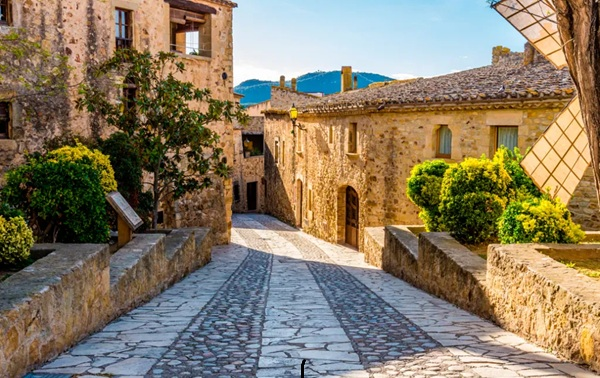

Los pueblos mas bonitos de cataluña
Los pueblos mas bonitos de cataluña

Uno de los pueblos más bonitos de la Costa Brava, provincia de Girona, es Pals, a unos 40 kilómetros de Girona ciudad, y a una hora y media en coche de la ciudad de Barcelona.
Situado entre el mar y la montaña, Pals es otro hermoso pueblo catalán que te hará retroceder en el tiempo hasta la Edad Media. En éste hermoso pueblo se encuentran combinados, en perfecta armonía, el estilo románico, el gótico y el barroco.
Aunque su casco urbano es bastante pequeño, el municipio se extiende hasta la costa donde se encuentran la platja Gran al sur y la platja del Grau al norte. Como pueblo de la Costa Brava, uno de los mayores atractivos de Pals es su playa.
"Pals no merece una visita, sino cien visitas,
porque su ubicación ofrece la posibilidad de ver
uno de los paisajes más bellos e inolvidables del país".
-Josep Pla.